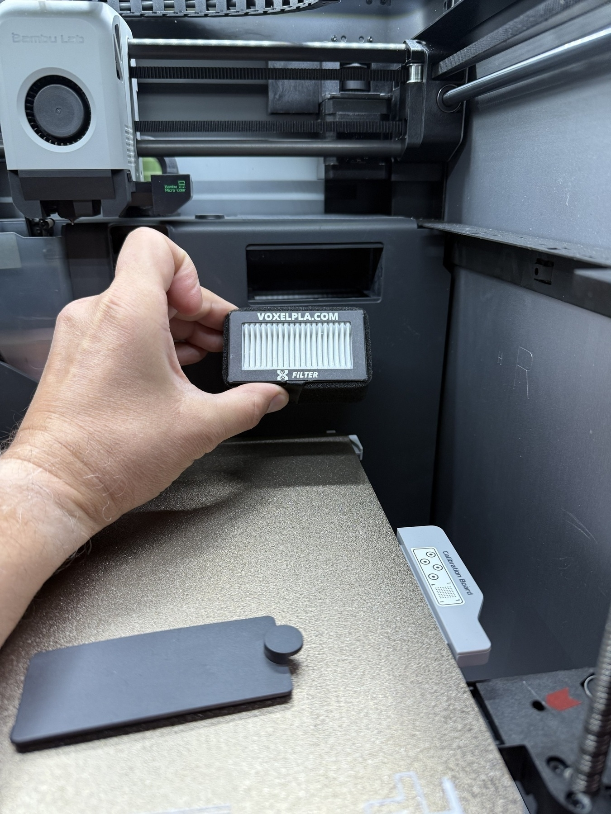
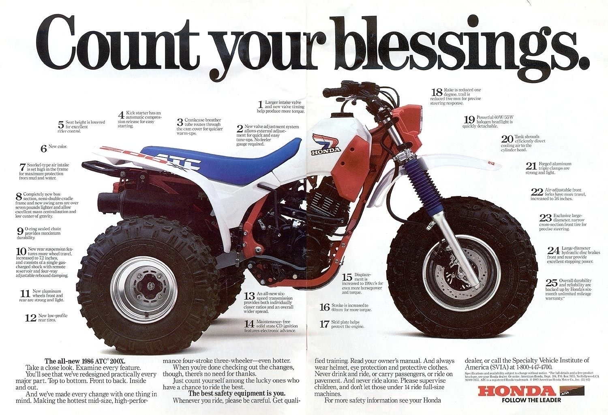

I really enjoyed this documentary. If you even have a small adventurous bone in your body, you’ll enjoy it.
I had a difficult time finding it online, but was eventually able to rent/purchase it through Vimeo.


Finished reading: Raising Hare by Chloe Dalton üìö
I LOVED this book. I was not happy at all that it came to an end. I wanted the book to continue, for much longer. For the whole life of this beautiful relationship between a wild hare and an amazing writer. Thank you Chloe Dalton for writing this book. I will think about this book for many years to come.

Finished reading: The Left Hand of Darkness by Ursula K. Le Guin üìö
If you haven’t read this before, I recommend the 50th Anniversary edition with the introduction by David Mitchell and the Afterword by Charlie Jane Anders. Beautiful work with a deep message.

Finished reading: 117 Days Adrift by Maurice Bailey üìö Great survival story, really enjoyed it.
Notes from the series "The Eightfold Path".
I’m a daily user of the meditation app Waking Up. I’m not a Buddhist, but I love many of their teachings. Along with daily meditation, this makes me a better person and gives me freedom from ruminating on my thoughts.
I listen to many talks from Joseph Goldstein and usually take the time to make notes. I started a new series within the App called The Eightfold Path, which is hosted by Dan Harris, Joseph Goldstein, and Sam Harris. The first talk was approximately two hours long, and I listened to it once through uninterrupted, then returned a second time with the purpose of taking notes.
I thought I’d post my notes from the first talk. Perhaps this will pique your interest enough to want to listen to the entire series, or maybe even try meditation. It has changed my life.
“The Eightfold Path”
Dan Harris, Joseph Goldstein, & Sam Harris on the Waking Up App.
Day 1 - The Right View
Someone asked the Buddha, Are there still enlightened beings in the world? As long as people are practicing the Eightfold path, there will be enlightened beings in the world.
Enlightened, awakened: The uprooting of greed, hatred, and delusion.
Assess your practice, are you suffering less or more?
Generosity, Love, and Wisdom are causes of greater happiness.
Dukkha:
The Pali word is usually translated as suffering, but Joseph likes the inevitability of unwanted experiences. And why the inevitability? because everything is unstable, everything is continually changing. Things are becoming otherwise.
The monkey trap:
Hunters will hollow out a coconut and make a small hole, just big enough for a monkey to put his empty hand through. Inside is a sweet, tempting treat. The monkey slides his hand through and grabs the treat, but is unable to remove his hand while holding the treat. The hunter is approaching, and the monkey is trapped. Unable to remove his hand. It is the rare monkey that can “let go” and remove its hand. Because of the force, the habit, the deeply conditioned habit of grasping to what is pleasant, holding on.
You get to the edge of your comfort/discomfort:
Level of discomfort, painful emotion, you get to the edge, the goal of practice is not to avoid that, it’s a benefit that the practice leads you to this place. You can learn how to relax into whatever that experience might be without holding onto it or pushing it away. You are seeing the impermanence of the discomfort, the emotion, so your comfort zone gets a little bigger. With more practice, over the years, you are enlarging your comfort zone, ultimately to the place where you have no edges. So, whatever arises, the mind is relating to it from a place of greater freedom.
Earth, Air, Fire, Water. Plasma, Gas, Liquid, Solid.
The Two Arrows:
The first arrow is the pain. The second arrow is all the mental suffering you might add to the physical pain. The Buddha points out that it’s the second arrow that we can work with. How we relate to it is up to us.
Letting Go:
It’s not the best phrase, but using the phrase “Letting Be” is much better. If something is painful, you’re not holding onto it; you don’t want it. Letting Be is a better description. Let it be, watch it change, watch it go away.
Preferences:
It’s not, not having preferences. It’s not being attached to the preference. You’ve been planning the buffet all day long, craving sweet buns, and you get to the buffet and they are out of sweet buns. Ideally, this would not cause a ripple in thought, nor cause suffering. To hold what is pleasant and unpleasant with equanimity.
Buddha would visit the sick:
I hope your pain is diminishing, but the patient would say No, it’s getting worse. The Buddha would say, Though your body is afflicted, may your mind remain unafflicted.
Mental Suffering:
Our thoughts on the past, present, and future bring the most suffering. The real promise of meditation is that, though the first arrow of physical pain is inevitable, the second arrow of mental suffering in all its forms, certainly your suffering of thoughts of the past, present, and future, is something that you can wake up from.
The Buddha said mental suffering is worse than physical suffering. The teachings of the Buddha are how to free ourselves from that mental suffering.
First Step of the Eightfold Path is Right View:
One expression of wrong view is: it’s the feeling or experience of, I’m happy, or I’m sad, I’m afraid, I’m bored, etc. This is the common way we interpret our experience. The wrong view aspect is the claiming of that mind state to be the self, to be I. Which is so deeply embedded into our conditioning. So the relief from that suffering is to be mindful enough, aware enough, of the emotions themselves as being impersonal.
One Tibetan teaching says, Thoughts and emotions wander through the mind like clouds in the sky, no roots, no home. What we can do is to root those emotions in the view of self, and that is what is problematic. Our practice of meditation is to see the emotions, the thoughts, for what they are: moving, always changing, passing by. Do not root them into the ground, into your mind as yours, as I.
Right View sets the direction of your path.
The first level of Right View is sometimes called Mundane Right View. It has to do with the right view for developing greater ease and happiness in our lives. How do we live wisely in a way that reduces suffering, creates more ease, aligns us, and puts us in harmony with the way things are?
The understanding that our actions have consequences. The Law of Karma. All of our actions will bear fruit at some point, depending on the motivation associated with the action.
When we act motivated by greed or anger, motivated by delusion, that is like planting the Karmic seed of some future unwanted experience. On the other hand, when we act motivated by generosity or love, by understanding or wisdom, that is planting the seed of some future desirable experiences.
When we act, it’s usually without thinking about where this act is coming from, what the Karmic consequences would be. Without taking the time to consider our motivations. Where is this act coming from, where is it leading, and do I want to go where it’s leading?
Which feels better, being happy and kind and loving, or being angry and upset? Which person do other people want to be around? It’s so simple and so powerful.
In the texts, it emphasizes the value of generosity, a behavior to cultivate, not just because it feels good in the moment but because it has very good Karmic consequences.
Make generosity a practice.
On the spiritual path, time is not a factor. We, especially in the West, want results now; we don’t want to wait. The spiritual path takes time, and time is not a factor if we are on the right path, going in the right direction.
Deep Dive into talking about belief in the deeper parts of Buddhism, like rebirth and Karma:
The willing suspension of disbelief. We can be attached to our disbeliefs as strongly as our beliefs.
Saying “I don’t know” is very different than saying “It’s not true”.
Be open to the possibility.
Sam references Pascal’s Wager in relation to belief in rebirth.
Pascal’s Wager:
Pascal argued that when it comes to belief in God, we face a kind of wager or bet:
-
If God exists and you believe → you gain infinite reward (eternal life).
-
If God exists and you don’t believe → you risk infinite loss (eternal punishment or loss of salvation).
-
If God does not exist and you believe → you lose little or nothing (maybe some worldly pleasures).
-
If God does not exist and you don’t believe → you gain little or nothing.
So, from a practical, risk–reward perspective, believing in God is the “better bet,” because the potential gains outweigh the potential losses.
Joseph had a teacher who said, “You don’t have to believe it to become enlightened; it’s true, but you don’t have to believe it.”
Dan’s summary of Mundane Right View:
Understanding that actions have results or consequences.
Understanding that awakening is possible.
The root of suffering is craving.
Joseph adds, selflessness or non-self.
We don’t invite our thoughts to come; you can, but most of your thoughts come uninvited.
One technique is to treat your thoughts that pop into your head as if they are coming from the person next to you. It can help you not identify with them.
As the thought is there, ask the question, What is a thought? Not what the thought is saying. But what the thought is as a phenomenon. You’ll find that it’s not much. You are taking the power away from the thought. You can get angry, or jealous, or have a very strong emotion over a little, small thought. Take that power away. Look at what that thought is. The empty nature of thought.
Impermanence, Dukkha, and Selflessness.
Mundane Right View: Day-to-day right view, conditional, conventional, what are the actual ways of producing ordinary states of happiness. Super Mundane Right View: Transcending all the Mundane Right View and waking up
In Sam’s view, the most astounding quality of the mind:
Unexamined thoughts are everything, and examined thoughts are nothing.
There is almost no tradition in the West of philosophy or psychology that even acknowledges that fact.
We are completely in our stories.
Three stages of Tibetan self liberation:
- Writing on water: as soon as you write it, it vanishes.
- The knotted snake unties itself.
- Thieves entering an empty house.
Scratch Pad Thoughts

-
Love the life you have, with the stuff you have, and try to improve it a little bit each day.
-
Take pictures of everything.
-
Tell your friends and family that you love them.
-
Talk to random strangers, connect with people, even just for a few minutes. You may brighten their day, and yours.
-
Do something you are scared to do. Start small and work up to “No Fucking Way, I’m doing that” kind of stuff.
-
Declutter both physically and mentally. Give something away. Clean up that pile of papers on your desk.
-
Read a book with your phone on silent.
-
If you want to buy something, put it in your cart and wait a day or two. Then, ask yourself, Will this still be useful in three months? Will this bring happiness? Is this thing worth going to work for?
-
You can skip the pursuit of happiness altogether and just be happy.
** None of these cornerstone ideas are truly my own; I’ve read/seen them before, thought about them, changed the wording to fit my life. Try to do the same, make them your own. Write your own versions and look at them daily for a few weeks over coffee. Tweak, read, think, tweak again until they are just right for you.
From 2003 to 2023, the share of Americans who read for pleasure fell 40 percent, a sharp decline that is part of a continuing downward trend
“From 2003 to 2023, the share of Americans who read for pleasure fell 40 percent, a sharp decline that is part of a continuing downward trend.”
This really saddens me. I know personally (and I’m in the minority here), I would much rather read a great book than play video games. And, it’s not from trying, I have a PS5, Gameboys, and Switches, and I just don’t play them very much at all. When I’m reading a good book, I think about it when I’m not reading and look forward to getting back to it.
To each their own, but I fear that we are not promoting reading and showing children the joys of it. My wife was a grade school librarian for 12+ years and read to students every day, opening up whole new worlds for them. Sadly, librarians seem to be a thing of the past. It is our loss.

Finished reading: Doomsday Book by Connie Willis üìö

Finished reading: How to Think Like Socrates by Donald J. Robertson üìö

Finished reading: Never Leave the Dogs Behind by Brianna Madia üìö

Finished reading: Nowhere for Very Long by Brianna Madia üìö
üìö In reference to finding great new books to read, here is some help from the Atlantic:

Finished reading: Essays After Eighty by Donald Hall üìö
I thoroughly enjoyed this book. Donald Hall is an outstanding writer, he may not write poetry anymore but he is still a word-smith. He made me laugh, tear up, and nod my head in understanding at many of his stories.
Finished reading: A Marriage At Sea by Sophie Elmhirst üìö
Really enjoyed the story, if you like survival stories, you’ll like this one.
I learned about this website from Ed Young’s Newsletter. I think everyone in the U.S. needs to see it.
About The Website Unbreaking:
The United States is experiencing institutional collapse at a speed and scale that are difficult to understand, especially through feeds and updates that atomize our attention. We believe that mapping the damage done and its human costs—and the pushback and resilience work already underway—is necessary groundwork for building and retaining political agency.


2025 Reads: The Immortalists by Chloe Benjamin üìö
Good book. Makes you ponder life and your major life decisions.
“That you feel something to be right may have its cause in your never having thought much about yourself and having blindly accepted what has been labeled right since your childhood.” ~Friedrich Nietzsche

Finished reading: Air-Borne by Carl Zimmer üìö
1 Astronaut, Many Cameras and 220 Days of Amazing Images From Space Don Pettit brought a photographer’s eye to orbit, capturing the artistry of the cosmos and our planet.
Gift Article:


Finished reading: Everything Is Tuberculosis by John Green üìö
Excelllent book. A book that should be read by everyone.
1.25 Million people die every year from TB. Experts say that no one should die, every case is curable.
Koofr and pCloud
Well, I’m uploading 2TB of photos to Koofr, so far, so good.
I’m new to them, and setting everything up has been straightforward so far.
I also signed up with pCloud and set it up, but I haven’t used it much yet. I can say I prefer pCloud’s interface, which looks and feels better to me.
After using both, I’ll let you know the pros and cons.
#koofr
#pcloud
Custom CSS for your Markdown in DEVONthink - Who Knew!
This link comes from MacStories, but it’s too good to not share.
If you are a DEVONthink user, this is a really nice touch. I’ve downloaded and used jsloop’s custom CSS, and it’s terrific.
I had no idea you could do this in DT, and it makes all the difference in the world.
There are directions for both DEVONthink 3 and DEVONthink To Go 3, and you are free to use jsloops CSS to get you started. Then it’s easy to make tweaks after that.
The two links:
https://www.devontechnologies.com/blog/20250327-markdown-stylesheet-jsloop
https://jsloop.net/2025/03/22/markdown-theming-in-devonthink-3
Through a newspaper article, I learned about Hiroshi Yoshimura and his Ambient (Sound Design) music. It’s really nice background music to have playing. I’ve listened to three albums now, and “Surround” is my favorite.
This always brings back so many memories of sitting by a fire in the dark drinking beer, and someone would recite The Cremation of Sam McGee from memory.
You can listen to a pretty good audio version here:
‘The Cremation of Sam McGee’ üîó / alaska.org
“There are strange things done in the midnight sun By the men who moil for gold; The Arctic trails have their secret tales That would make your blood run cold; The Northern Lights have seen queer sights, But the queerest they ever did see Was that night on the marge of Lake Lebarge ? I cremated Sam McGee.“
Cliff538 üá®üᶠüí™üèª
Short Walk in Omaha / The Rest of the Daily Shots | February 26, 2025
iPhone 16 ProMax shot/processed (shot in RAW)
ElevationLab has a new AirTag Camera Plate that is Arca-compatible. Ordered one to try it out.

I have Tailscale up and running on the Synology NAS. There is very good step-by-step instruction here. It’s pretty cool to be able to use the Sharesheet and send whatever you need to it from any device.
PSA: Tomorrow is the cutoff to download your Amazon books. How To Do Stuff walks you through step by step how to do it with automation. Easy Peazy.
Consider adding this What is a feed page to your blog to help people who may not know what a RSS feed is or how to use it. Compliments of Matt Webb.
Just added it to mine.
I did 1,157 books the old fashioned way, with lots and lots and lots of clicking. Don’t be like me, be smart. Follow this üëá
‘How to bulk download Kindle files, while you can’ üîó Jason Snell / sixcolors.com
When Inspiration Turns Dark
I love photography—everything about it: carrying a camera around, freezing moments of time, downloading the photos to my computer to see what I’ve got, processing them, tweaking them, and making them just right. I share them because I’m happy with the picture, and maybe it inspires someone else. Pictures start conversations. Pictures can make you cry, think, or even change your mind. 
I want to say a few words about the inspiration part. 
At first, looking at other people’s photography was inspiring. But over time, it started to have the opposite effect. I wasn’t learning–I was comparing. And comparison is a trap.
You can take in so much of other people‚Äôs photography that it can make you feel bad about yours. It can make you put your camera down with a sigh; why even bother? I suck; there are 10,000 better photographers out there sharing amazing content, and nobody needs to see my crap pictures…. and on and on and on‚Äîthe dark side.¬†
A lot of this is from social media itself. 
Some from looking at/consuming more photography than you are out shooting. More Consuming, Less Making.
I struggled with this a few years ago and completely put my camera down and stopped taking pictures. I felt like, why bother, my stuff is crap. I spent too much time looking at other people’s photography, taking classes, and worrying about my gear instead of just being outside taking pictures, loving my hobby, and working on my craft.¬†
Be inspired, look at other people’s work, but know when to stop. Know when to get outside and shoot. Work on your stuff, find your happy place, and find your niche in this big photography world. There are limitless photos uploaded every day. In 2024, it’s estimated that 14 BILLION photos were uploaded to social media EVERY DAY. You can’t compete with that; you can’t even look at 1% of those photos in your lifetime.¬†
Find your group, find your niche, or don’t. Just take pictures if it brings you joy. Upload them to your socials, or don’t. Make a website, or don‚Äôt. Do what is right for you. There is no good and bad. There is only art. Your art. Do what brings some joy to your heart. Make yourself smile. And if you do upload your photos, I can guarantee that somebody sees them, and it makes them smile, makes them think, brings them a little joy, and most of all, inspires them to go out and take some pictures.¬†
Epilogue: 
Photography has been part of my life for as long as I can remember. I fell in love with it back in high school; we were lucky enough to have a yearly photography class with a complete darkroom. I took it almost every year through school; we rolled our own film and developed our film. My dad gave me his old Pentax camera, and I shot a lot of pictures. 
At one point, photography became more than just a passion–it became a business. I sold my aviation prints online, and for a while, it felt like I was living the dream. But soon, I found myself spending more time answering emails, processing orders, and futzing with gear than actually out taking photos. ¬†
Selling my photos online and making a business out of it brought me down a dark hole where I would look at “better” photographers and their work, and I kept feeling worse and worse about my skills and how I couldn’t push it to the next level. Their pictures were always better. 
I stopped taking pictures. 
Completely. 
For years, not a single photograph. 
Cameras put away in a drawer, deleted all my photo apps from my computer. I was done. 
Not long ago, on Mastodon, I started seeing people’s photography, passion, and love for the art. And boy, did it spark that love again for me. No more selling, no more comparing, just doing what I love to do, even if it sucks. 
I want to express my deepest gratitude to the photographers I follow on Mastodon. Your work, your passion, and your love for the art have reignited my own love for photography. You’ve inspired me and brought me back to what I truly love. Thank you from the bottom of my heart. 
Somebody out there will see your work, and it will spark something in them–just like the photographers I follow on Mastodon did for me. And maybe, one day, they’ll be the ones inspiring someone else to pick up a camera again.
Cameras up. Let’s go shooting. 
Bringing a Little Joy Into My Day and Weekly Planning
There are endless blog posts about the latest to-do apps and systems. My goal is not to proclaim from the rooftops that I’ve found the secret to daily planning success but to share some thoughts on a few options that I have found very rewarding.
I have a constant struggle with Analog vs Digital; it perturbs me how much I think about this. I’ve given up worrying about which type of system it is, and I do what feels right and what keeps me on track. And, if that system brings a little joy to the process, even better.
I’ve been a Things app user for years now and love it. It’s quick and easy on all my devices and syncs well. It’s always on my desktop at home as a gentle reminder to keep me on track for the day. My problem with it is planning my week or my day. Things is an ever-growing constant list that mostly sits stagnant, and I have little interaction with it on a daily basis. I’ve tried building my day in calendar apps, and that works, but they don’t stay open. I close them at some point, and the day aimlessly drifts off down rabbit holes. One requirement I’ve found is that the day planner must always be visible.
When planning my week and day, I was missing something and wasn’t staying on track throughout the day. It’s all there in Things, but I don’t have any draw to it; I can’t touch it or grab it and alter it. I’m primarily digital, but I need/crave some pen and paper touch‚Äînot too much, though; I’ve tried paper journaling, and that’s too much. I love journaling in DayOne.
Enter Ugmonk. First, this is not a cheap system upfront, but by the time you read this, they will have a much more affordable metal version for sale (launching February 19th, 2025), which has been much needed. Also, this system is not complex; you could easily make your own with some woodworking skills or a 3D printer and 3x5 cards. The cost for me is worth it; it brings me a little joy, it looks great sitting on the desk, and I’ve stayed on track better throughout the day.
I’ve been using the system for over a month and love it. I’m still not sold on using the weekly and daily views together, but for now, it’s both. It comes down to how your brain works and what you need to see. I’m a person with an odd job. I’m away from home for 3 to 4 days a week. So, when I’m home, I need to see what is left of my week and what I want to accomplish that day. I never know what day of the week or day of the month it is; it just doesn’t matter to me. I have large calendar widgets on all my devices to help me remember. All I want to know, what I need to know, is how many days off I have until I go back to work and what I want to get done on those days.
I use the weekly card for this. On my first day off, I grab a fresh card and my favorite pen and map out my week in broad strokes; it sits on my desk, so I’m constantly reminded. Then, each day, I formulate a plan with the daily card.
There is something special about grabbing that thick, beautiful paper and writing on it with your favorite pen. It gives substance to the plan; it sinks it just a little bit deeper into memory by writing it out. It makes me smile; it brings just a little joy, and I like that. Plus, I always have paper to quickly grab to make quick notes using the backside of the weekly or daily card. When done with the day or the week, I can store them away, or I’ve been using them for bookmarks.
As an option to this analog version, I just learned about Tweek. I’ve used this alongside my Ugmonk/Things system just for testing. I think Tweek is really cool; I wish I had come up with it. If I ever want to drop Ugmonk, I’d go with Tweek. They have full function under their free plan, so you can test it to see if it fits into your world. But it’s sterile for me; I need some analog, I need to touch some nice paper, and I need to use my favorite pen. I need that little piece of joy to start my day, the constant visual reminder, and that satisfaction of marking off an item with my Sharpie.
I hope some of this helps you with your task list. Thank you, as always, for visiting my little piece of the web. Cheers!
Spent some time ‚ÄúChatting with my highlights‚Äù in Readwise. I really like this feature. I have highlights from over 1000 books now so it‚Äôs really interesting to have a more focused knowledge base to ask questions from. This feature may alter which things I highlight in the future. üßê
The Rest of the Daily Shots | February 16, 2025
Ever seen the inside a Saguaro cactus (Carnegiea gigantea)?

The woody skeleton inside the saguaro gives a framework of interconnected, woody ribs that provide structural support, enabling the cactus to reach heights of up to 40–50 feet.
Unfortunately, this saguaro is going to look like this fairly soon.
Saguaros have evolved to withstand the harsh conditions of the desert. However, the increasing frequency and intensity of heatwaves in the Phoenix area have begun to exceed their tolerance levels. This is a very sad example of climate change here in the Phoenix Valley.
If anything good can be said of it, it will at least feed the desert critters; they seem to love munching on the soft green flesh.
Here, you can see where they are nibbling at the base of this young saguaro.
The green flesh has all been consumed here just leaving the reddish brown woody underside.
This green lichen is all over the rocks; it is this bright fluorescent green, and I haven’t bumped the color at all.
Desert rocks here have what is called Desert Varnish. It is a dark, glossy coating that forms on the surface of rocks in arid environments over thousands of years. You can read more about it here.
You can really see the shiny thick varnish on this rock. It can make for some beautiful colors.
Here you can see their shallow root system.
Saguaros possess an extensive but shallow root system, spreading out as wide as the cactus is tall, to efficiently capture rainfall. This also makes them more prone to falling over and, unfortunately, being stolen from the wild.
I hope you’ve enjoyed this little desert walk.
You can see the chosen daily pic at 365Pixels

Finished reading: How to Get Filthy Rich In Rising Asia by Mohsin Hamid üìö
Want to know if this book is for you? Read the first chapter, if you don’t connect with the writing style, not for you.
I really enjoyed it, the writing style is unique, the way the story is told is unique. I liked it, a lot.
The Challenge of Reading in the Digital Age
What’s unique about the number of books read?
Why do we track how many books we read? Why not count articles, magazines, or blog posts? Imagine an app that monitors every word you read and provides a total at the end of the year. Perhaps the next wave of AI-powered glasses will track not only how much we read but what we retain.
But does the number really matter? If you quizzed me on all 30 books I read last year, how much could I recall? Would I even want to know my exact retention rate? Maybe I should focus less on quantity and more on comprehension. Could tools like Readwise, which helps revisit past highlights, improve retention?
One approach I’ve been refining is writing about each book after finishing it. I review my highlights, jot down my thoughts, and create a mini book report. Readwise syncs with Obsidian, pulling in my highlights so I can reflect on key insights. I structure my notes with sections like Key Points, Personal Impact, and Action Items, and I’m considering adding details on who might benefit from reading the book, whether I’ve shared it with others, and if I’ve blogged about it.
The Power of Books
Books offer something unique–deep knowledge, immersion into another world, and a window into someone else’s perspective. Yet, attention spans seem to be shrinking. The internet has rewired how we consume information, making it harder to sit down and focus on a book. Some people struggle to finish long-form articles, let alone entire books. Does that matter? Are short-form videos and bite-sized text replacing deep study? The answer seems obvious.
Reading is a skill that requires practice. We should guard against losing it. Slow down. Put your phone on Do Not Disturb. Get lost in a good story. Let a book transport you beyond the present moment.
I struggle with this too. Even after reading over 30 books last year, I sometimes find my mind wandering after just a few sentences. I’ll read a page, then realize I absorbed none of it. Even rereading it doesn’t always help. When that happens, I close my eyes and focus on my breath–just breathe, slow down, reset. Losing the ability to focus is unsettling, not just for individuals but for society, workplaces, and families.
A Modern Problem?
Is this inability to focus solely a product of the internet age? I’m not sure. I didn’t use computers until high school or have internet access until college, yet I remember struggling to concentrate even then. Maybe distraction isn’t new–maybe it’s just easier than ever to indulge in.
The real challenge is how we engage with information. Do we skim and forget, or do we slow down and absorb? Reading isn’t just about finishing books–it’s about understanding, applying, and growing. That’s what I want to improve.
‘Your World Is Burning. Here’s What You Can Actually Do About¬†It.’ üîó Joan Westenberg / joanwestenberg.com
You can doomscroll, or you can create.
You can rant, or you can build.
You can theorize, or you can act.
You can wish, or you can work.
The Rest of the Daily Shots | February 13, 2025
You can see the daily shot at 365Pixels.
More experimentation today. Not happy with anything, but learning has occurred. ☺️
The Rest of the Daily Shots | February 12, 2025
You can see the daily shot at 365Pixels.
Here are the others from the day I shot and had to choose from. Would you have picked a different one for your daily shot?
Inspired by @maique@social.lol, who posted some rainy-day windshield shots, I thought it was perfect that it was raining in BNA.
Landing in BHM, I was able to get this shot with the spoilers up.
Waiting for the van I loved the wet curve in the road with the towers in the background. When you see it, you know it needs to be captured.
Another variation really captures the lighted concrete towers. I really like the contrast in this one.
This was behind the check-in counter at the Hilton, didn’t even need to convert this one to black and white, right out of the camera and added a border.
This is how we used to change a nose tire on the Twin Otter; this technique is probably frowned upon today üòÜ
I spent many hours working and flying on ol' 100AP; I miss that plane.
#oldschool #aviation #arcticmaintenance #twinotter
KIWIX - A User Report
I’ve seen this posted about Mastodon a lot, and then @amerpie posted about it yesterday, and I thought, why the heck not? Let’s check it out; I’ve got some time to kill.
So, yeah, this KIWIX is really cool. I’m not a Super Bowl kind of guy, so I downloaded Kiwix and then proceeded to download the entire Wikipedia, then iFixit, then Gutenberg. Sheesh, why not? I have a Synology with ample space, so why not lock some of this stuff in and have it on local storage?
If you read some of the reviews on Kiwix, you’d think it doesn’t work well, but I’ve had zero issues with it; I’m using the Mac App. So now I’m a downloading fool, gathering what I can for no apparent reason other than because I can…
Here is their Library of downloads. Check it out and see if there is anything you may want to have stored locally.
Some of the files are huge, so good storage capacity is a must, but they have tons of different download options if you are interested in just sections of, say, Wikipedia.
You can even run a local Wi-Fi network from a Raspberry Pi with all your downloaded data. This would be great for classrooms, but I may do this just for the fun of it.
It’s good to have it stored locally, but clearly, the mission is for folks who have limited or no internet access. It’s free to use and looks like a worthy endeavor to support with your skills or finances.
Here is their About Page. Some pretty cool stuff here, like:
The Short Story Did you know that you could store the entirety of Wikipedia on your phone? And read it anywhere, at anytime?
The Long Story We can make highly compressed copies of entire websites that each fit into a single (.zim) file. Zim files are small enough that they can be stored on users’ mobile phones, computers or small, inexpensive Hotspot.
Kiwix then acts like a regular browser, except that it reads these local copies. People with no or limited internet access can enjoy the same browsing experience as anyone else.
The software as well as the content are fully open-source and free to use and share.
The Challenge
50% of the world’s population has no reliable access to the internet. This can be because of cost, lack of infrastructure, or censorship.
The Solution – How Does It Work?
We copy educational websites and compress them into files that people can take with them and browse anytime, anywhere. Kiwix Is Also A Nonprofit Most of our revenue comes from donations. We do not display ads, nor do we collect personal data.

üîó How Your Thinking Changes at 60 | Andy’s Blog
Then you turn 60. And something shifts.
You stop caring about things that don’t matter.
You don’t need to prove yourself anymore.You don’t need permission.
You don’t waste time on people who drain your energy.You’ve seen enough trends, fads, and “next big things” to know they all pass.
And most importantly, you realize time is no longer on your side.
Carl Griffith’s 1847 Oregon Trail Sourdough Starter
Want a Sourdough Starter that’s been active since 1847? I can’t verify that the offer is still active, but we did it several years ago. Follow the directions exactly, or they won’t send it to you.
‘Source’ üîó Griffith / carlsfriends.net
Exposed to Light | 02 - Hippo Love by Unknown
Photographer: Unknown.
Camera: Unknown.
Title: Unknown; I’m calling it Hippo Love.
Link: Unknown.
I have two desktop screens. One’s background picture constantly changes; the other has this, which never changes. The love, care, and trust that this picture imparts makes me smile every day. I would love to know the background of this shot. I would love to talk to this man and find out about his relationship with this hippo. What is the hippo’s name? How long was he a part of this hippo’s life? Was this a daily ritual? How long did they sit there? Who took the picture?
I love the working-class feel of the picture. I had that lunch box for a while growing up. I love the tape on it. Mostly, I love the hippos' look of complete security and peace. No matter what was going on in this hippo’s life, at this moment, all was well with the world.
When I look at this picture first thing in the morning when the computer whirls to life and the screens pop on, all is right in my world, too.

This is not good. üòî Nome was home for many years‚Ķ
Breaking: Bering Air flight into Nome overdue with 10 aboard; search is on - Must Read Alaska
Las Vegas for 19 hours, time to head out and get my daily iPhone shot for 365Pixels.


(‚≠êÔ∏è3.75/5) - Finished reading: CABIN by Patrick Hutchison. It’s a good book, makes you laugh, and brought back many memories for me building forts in the woods as a kid. A writer with zero handyman skills buys a $7000 cabin in the woods of Washington State and tells the adventures of fixing it up along with the joys and life-changing memories of having an off-grid cabin that eventually changed his life and career. üìö
What TV series intros do you watch every time?
Does watching the intro to every episode mean something?
Netflix, AppleTV, Hulu, etc., allow you to skip intros. What does this say about the intro quality or the show? Or about us as humans who are always in a hurry. This behavior of skipping intros may reflect our impatience and desire to get to the main content quickly. As a designer of intros, do you get the data on how many people skip your intro? Does it make you want to change it? Why do some shows change each season’s intro and others do not? Budget? How much does it cost to change the intro each season? Is this a metric that is used at all?
Such curious questions.
What we do: We always watch the whole intro of the first episode; it can be a source of insight into the show, somehow set the tone, or even give hints, and then we don’t watch it again until the last episode. But there are exceptions. When the intro is fantastic, the show is an all-time favorite, or it seems an essential part of the show, or maybe it’s because you don’t want the show to end, and you want to watch every second of it. This has been the case for Chefs Table, Game of Thrones, Murders In The Building, Severance, Westworld, and others.¬†
What about when the intro or trailer is better than the show itself? Maybe the folks making the intro need a raise because they condensed your mediocre show/movie into something good!
I’m talking just about intros, but the same could be said about the credits. How many times do you watch the credits? For me, it’s rare, but when I do, it’s because I want to know where it was filmed, the names of the people who made such an amazing piece of art, or the show was so powerful that you want to absorb every last drop.
üìù I need an online course that teaches problem-solving in web design. How do you systematically track down issues in your HTML, CSS, JS, etc? I know the best teacher is just plain ol' experience, but some foundational training on which tools and how to use them would be good.
Exposed To Light | 01 - Ballet Dancers by S.
Exposed To Light
Get ready for a new post, popping up weekly, monthly, or whenever inspiration strikes. It’s all about a powerful picture that catches my eye.
How do I know? As they say, you know when you see it. For me, It catches my eye right away. I open it full screen and can’t stop looking at it. It’s powerful, dynamic, beautiful, tells a story, and has good lines; maybe it’s the lighting or shadows, but so many things can make a powerful photo. It’s a moment that in real life passes you by in mere seconds, but when you freeze that moment in light and shadow, you give that mere micro-second of time a new life. Your brain has time to process it and, more importantly, to feel it’s draw, it’s power. A photograph can be one of the most emotionally invoking things we interact with.
Onto the first installment of Exposed To Light:
Photographer: S.
Camera: iPhone 14 Pro
Title: S. didn’t appear to name the photo; I’m calling it Ballet Dancers.
Link: Ballet Dancers
The light and shadow in this shot are just mesmerizing. The entire range is present with light and shadow. The overall story here is pretty obvious, but the individual and small group stories are not. When you look around at the different expressions and small group chats, you can’t help but wonder what they are talking about and feeling. Nervousness, excitement, boredom‚Äîyou see all the different emotions in the faces.¬†
This is what S. says about the photo: 
This is the best photo I’ve ever taken and the client didn’t wanna use it. Pls enjoy bc otherwise it will never see the light of day :,)
They give a download link to the photo and tell people to download it and enjoy it. Further in the comments is a short video of the room where the shot was taken. 
I think the photo is fantastic.
Behind the Scenes on Project 365Pixels
Tough day behind the lens. Yesterday I was super happy with the pictures and felt good posting. Today was tough and I’m not happy with anything. You can see today’s pick here. I’m showing today’s other work below so you can see what I had to work with. It’s a fun process but much more enjoyable when you have a banger. üí•üì∑.
Pictures shot in SMF, with an iPhone 16ProMax. Edited on iPhone and posted with iPad.
Would you have chosen a different one?
Powerful article that impacted me deeply:
A Firsthand Account of What Homelessness in America Is Really Like
Here is the full update to Reader, a lot of good stuff:
Reader Public Beta Update #11 (Chat With Highlights, Apple Notes Export, YouTube v2, and more)
PSA: If you rebuild your website from the logs page and your custom CSS is not loading, go to Design -> Open Theme -> Custom CSS -> Update CSS, and your custom CSS will load. I just did a rebuild, had the problem, and that fixed it.
‘How Often Do Health Insurers Say No to Patients? No One Knows.’ üîó Robin Fields / propublica.org
This has challenged some of my beliefs about digital reading. I’m torn about my transformation to digital reading and am watchful for the downsides and pitfalls.
üîó The Deep Space of Digital Reading (Paul La Farge / nautil.us)
In A History of Reading, the Canadian novelist and essayist Alberto Manguel describes a remarkable transformation of human consciousness, which took place around the 10th century A.D.: the advent of silent reading. Human beings have been reading for thousands of years, but in antiquity, the normal thing was to read aloud
The predecessor to the ebook reader ☺️
“Hang In There”
Hiking in Colorado, caught this guy struggling to stay on top of a blade of grass. A little metaphor for this year…
üîó Clash: Power, Greed, and the Fight for a Fair¬†Future (Joan Westenberg / joanwestenberg.com)
You’re not reading this by accident. You’re reading it because you feel it in your bones — the growing pressure, the mounting tension, the sense that something has to break. You’re right. The system is reaching its limits. The question isn’t whether it changes, but how — and who controls that change.
When the processing fee is starting to rival your electricity fee…
Next month, I’ll start selling more than I use, building up a credit for the 115+ degrees F Summer that is coming.
Thank you, sunshine. #solar
‘Create an external bootable disk for Apple silicon and Intel Macs’ üîó Hoakley / eclecticlight.co
Digital Sovereignty - Own Your Content Reason Number 429
I used to write/publish photo stories at Exposure.co. It’s a nice website, and it’s a great place to see other people’s work, but it locks your content and locks you into paying every year to have access to your content. I’ve had a good engagement over there. I only have four stories there, but they each have 33,000+ views, which is a lot for my work. With that being said, I don’t do the things that I do for views, clicks, or money.¬†
I’ve been moving my digital life to cliff538.com and have downloaded my data for Instagram, Facebook, and Twitter. Today, I focused on Exposure. How much does it cost a year? Can I download my stories? Do I want this anymore? Keep or delete.¬†
Over the years at Exposure I’ve been paying $99/year, the lowest tier now is $149/year. I decided to export my content and move it to cliff538.com. Well, guess what, you can’t. The only export option is a PDF, only if you pay for Pro Plus, which is $319/year. If I want to export PDFs of my photo stories, I’ll have to upgrade my account, download the PDFs, and close my account. But, they throw in some nice warnings; if your stories are over a specific size, you have to be on the business plan at $999/year to export your PDFs. Two, they warn you that the PDFs may not even look good due to pagination issues and that they are working on it.¬†
PDF exports don’t help me much because I need to build a web page to recreate my photo stories. This makes me unhappy and reinforces why I’m making this move. Own your content, control where it is, and have full backups. Don’t be locked into price increases, a lack of export options, or business failures.¬†
So what to do? Well, I’m stuck; luckily, there are only four medium-sized stories. I have all the photos; I used Obsidian Web Clipper to clip the pages, which gives me the text between the pictures. Reimagining the stories into web pages for my blog will be time-consuming, but the beauty is that it will be the last time.¬†I’ll control how it looks and where it lives.
I thought about just deleting it but the stories really do have meaning for me. They are from a different time in my life. I wouldnt write the stories the same way today or use the same pictures (some of the HDR makes me cringe) but back then I did, and sometimes it’s good to see where you came from.
Note: below, you will read A.I. taking a crack at giving you reasons and risks. It’s polished, clean, and well done, but it feels soulless and generic, like reading a technical manual. I may be a lousy writer, but at least it’s real; it tells my story. I’m leaving the A.I. stuff just because it’s good info, a little novel, and maybe just a little bit for posterity.
(warning A.I. written text below)
The Risks of Relying on Third-Party Platforms
If you’re publishing your work exclusively on platforms like Instagram, Medium, or Facebook, you’re playing by someone else’s rules. While these platforms provide convenience and exposure, they come with significant risks:
-
Platform Dependency: What happens if the platform changes its algorithm, shutters its services, or bans your account? In 2024 alone, over 60% of creators reported revenue losses due to algorithm changes.  
-
Monetization Barriers: Platforms often take a significant cut of your earnings. For instance, YouTube takes up to 45% of ad revenue, and Instagram’s monetization options are pay-to-play.
-
Data Ownership: The data you’re generating—your audience insights, contact lists, and engagement metrics—belongs to the platform, not you. They profit from it while you’re left in the dark.  
-
Censorship and Restrictions: Platforms can impose restrictions on what you publish, often limiting creativity and expression. If your content doesn’t align with their guidelines, it can be removed or suppressed.
The Benefits of Owning Your Platform
By running your blog or website, you remove the middleman and take full control of your content and audience. Here’s what you gain: 1. **Full Creative Control**: Publish what you want, how you want, without fear of censorship.   2. **Data Ownership**: Collect and control your audience data directly, enabling better relationships and monetization strategies.   3. **Longevity**: Platforms come and go, but your self-hosted blog can remain online indefinitely, ensuring your creations outlive any trend or corporate decision.   4. **Custom Branding**: Unlike third-party platforms, your blog reflects your unique identity, free from distracting ads or conflicting branding.Debunking the Technical Barrier Myth
Many creators hesitate to start their blog because they fear it’s too technical or expensive. This couldn’t be further from the truth. Modern tools like WordPress, Hugo, and Micro.blog make self-hosting more accessible than ever. Here’s a simple roadmap to get started: 1. **Buy a Domain**: Use a registrar like Hover.com to purchase a custom domain for as little as $10/year.   2. **Choose a Hosting Platform**: Services like SiteGround, Micro.blog, or Netlify offer affordable options.   3. **Start Writing**: With pre-built templates and easy-to-use tools, you can be up and running in a matter of hours.  The Numbers Don’t Lie
The shift toward self-hosting is gaining momentum: - **45% of creators** plan to invest in self-hosted platforms by 2026.   - **70% of internet users** express concerns about how platforms handle their data.   - **Domain registrations for personal websites** rose by 30% in 2023.  Call to Action: Own Your Digital Future
Owning your content isn’t just about control; it’s about building a digital future that belongs to you. Stop renting your ideas on platforms that profit from your creativity. Start your own blog today, and take the first step toward true creative independence.Here are some resources to get started:  
Your creations deserve a permanent home. Give them one.
A Trip Home ~ Kings and Sawdust
A visual story post over at Exposure from 2015 - A Trip Home ~ Kings and Sawdust
First New Years Resolution: Bringing Music Back.
Just arrived in the mail today after a long journey across the ocean and a much delayed, confused, and convoluted time in Customs… One of my New Year‚Äôs resolutions was to bring music back into my life. Over the years, I‚Äôve played trumpet, harmonica, and guitar. Many years have passed, and it‚Äôs time to have a music outlet again. Let the Handpan adventures begin‚Ķ this beautiful hand-made handpan is handmade and from Meridian Handpans in Bristol, UK.
Do you know if this has been the case for a while or if it’s just due to the popularity boom? @numericcitizen
Trying out a new HEPA 13 & Carbon Combo Filter from Voxel for the Bambu X1 Carbon 3D Printer. Always in search of reducing particles/smells from printing. #3D-Printing
The funniest things pop into your head; Do you remember buying nails by the pound‚Ķ they‚Äôd be in a big box with that claw hook device to scoop them out into a brown paper bag. You‚Äôd weigh them on the hanging scale that was always close by, and write the weight on the bag. Good memories. #scratch-pad
‘Public Domain Day 2025 in Literature - Blog’ üîó Standard EBooks / standardebooks.org
Books by William Faulkner, Ernest Hemingway, Mahatma Gandhi, and John Steinbeck enter the U.S. public domain
In the early 90s, at a Dewline station at -40F on the North Slope of Alaska, A Canadian company chartered us for weeks while they fully automated the Dewline stations. I’m sure it was mixed emotions for the hardy, brave souls who lived at and cared for these sites to watch them be automated. I wonder how many went to the tropics after that!

I always find these facinating;
Mastodon Users: 11,817,591 accounts +324 in the last hour +6,156 in the last day +31,583 in the last week
Looking for thoughts, concerns and ideas in relation to deleting yourself off a social service. Delete your whole account? Delete all your posts and keep account alive to preserve and prevent your user name being used?
Not that anybody is clamoring to use cliff538 but I’ve had it for 35+ years I’ve always made accounts just to preserve the username. Something to even worry about?
Whoah, this never happens.
Conlextions #490 üü™üü™üü™üü™ üü©üü©üü©üü© üü®üü®üü®üü® üü¶üü¶üü¶üü¶ Solve Time: 3 minutes, 0 seconds
Nice winter storm moved through DAL yesterday, my first two flights cancelled this morning, so far my 11am is holding together. DFW was shut down yesterday for awhile due to lack of de-ice fluid for the runways. Going to be lots of chaos the next few days…
Progress! Added a “cliff538 Photography” page with links to photo sets (only one set as of now), But I like the way @manton has built this in. You can adjust the photo sets with custom CSS, and the large viewer is really nice. The only set right now is Land Yachts, if you don’t know what a Land Yacht is, check it out.
One of my favorite things to do is that little window of time after you finish a book and that exploration of your To-Read pile to find that next book… I enjoy it so much, It can take several days to make the pick. #simplethings
Working on my blog:
- I’m amazed at how much work is involved in having a light & dark theme(I can see why folks just have a dark theme only).
- Blown away with how powerful CSS is, you throw a little HTML in and the rest is all CSS and it can just do amazing things.
- I need to take some JS classes.
Does this ever bring back memories! My first one was the Honda 110.
Growing up, we rode three-wheelers every day all year long. Over the years, we had the Honda 110, 185, 200, 200X, and finally the 250R, which was scary fast. It was a blast riding on frozen lakes in the winter. I will never forget those times.
In shop class, we learned how to rebuild the motors and, of course, put in higher compression pistons to increase horsepower. Oh, and that dreadful youthful phase of liking loud exhaust pipes…
Our local dealer in town always had brand new ones sitting on the showroom floor, we would go in an and dream about saving enough money from working in the Summer fishing that we could get a new one..

Then, in my twenties, going up North to work, nobody had cars; it was all three-wheelers, four-wheelers, and snowmachines. Honda made the most incredibly reliable engines. People would tear those things up over the years, do very maintenance, and they just kept on going year after year.
It was a little sad to watch the three-wheelers phase out and be replaced by the four-wheelers, which were not as fun. I do understand, though. I know the accident rate was high with the three-wheelers, but that was mostly user error, not being properly trained in the limitations and idiosyncrasies of the machine, and riding one way too powerful for your skills. Growing up, with all the riding we all did, nobody was seriously hurt by them, but we had plenty of auto accidents/deaths.
Some final facts from Wikipedia:
Honda’s dominance in the ATC market peaked in 1984, with 370,000 units shipped and a 69% market share. In 1985, Honda offered their most diverse lineup, with ten models available. However, due to safety concerns, production of three-wheelers was voluntarily ceased by all manufacturers by 1987.  These models played a significant role in popularizing ATCs and contributed to the development of the modern ATV industry.
Sadly, this is mostly how you find them now:
Sad news… I’m a big fan of daily bootable backups and consider them essential.
üîó It‚Äôs Time to Move On from Bootable Backups - TidBITS (Adam Engst / tidbits.com)
The latest installment in the story of how bootable Mac backups will eventually disappear started with a blog post by Shirt Pocket Software’s Dave Nanian
Where Do You find Books To Read
This has been a struggle for me in the past. I often found myself running out of books and searching for something new to read, which led me to browse bookstores. Each visit is a wonderful experience; independent shops have a unique charm, often showcasing local authors, and the smell of books is irreplaceable. However, there were times when I left empty-handed, without anything that sparked my interest.
To tackle this, having a collection of online tools for discovering books is essential. Here are some ideas that may inspire you.
Now, I face a new challenge: a to-read list that keeps expanding, which is, in fact, a wonderful problem to have. I used to feel overwhelmed by this, but I’ve learned to embrace the reality that countless books will always remain out of reach. That‚Äôs why it‚Äôs so important to focus on reading what you love. Don‚Äôt linger on a book that feels just okay; there are countless extraordinary stories waiting for you. And don‚Äôt let that ever-growing pile of unread books weigh you down; it‚Äôs always there with your next book!
I will continue to add to this list with your suggestions and any helpful resources I come across. Please email or comment with your favorites, and I’ll include them.
Updated January 23, 2025 from Somewhere in Arizona
Major Platforms
Five Books - They ask experts to recommend the five best books in their subject and explain their selection in an interview. This site has an archive of more than 1700 interviews and 8000 book recommendations. They publish at least two new interviews per week.
The Millions - A great online publication devoted to books. Check out The Great Fall 2024 Book Preview as a good place to start.
100 Best Books of the 21st Century - NYT Gift Article
The Best Books of 2024 - The New Yorker
NYR Of Books - The New York Review Magazine is over my head and usually out of my wheelhouse, yet I still enjoy it and find it helpful. Although I usually only read one or two articles, the ads are mostly for books, and It’s been a great place to find new books that I would never have ordinarily seen. 
New Books To Read in 2025 - Penguin Random House. It also has a good weekly newsletter about their books. 
Red Pen Reviews - Expert nutrition book reviews that sort fact from fiction
GoodReads - Amazon company
StoryGraph - A fully-featured Amazon-free alternative to Goodreads
Personal Sites & Blogs
Derek Silvers - He does a good job blogging about the books he’s read. 
Trey Hunner - Has a great 2024 recap on his books and audiobooks.
The Library of Alexandra - I just found this via microblog and am looking forward to exploring it.
Social Media
For myself, this is just Mastodon and the newly found Micro.blog. After you acquire a group of people you enjoy following, it can be a great place to see what they are reading and why.
Micro.blog - Really is amazing for book ideas and reviews.¬† In your Discovery feed, you can filter by books and see what everybody is reading and their book reviews. I’m new to it, but it looks like a gold mine!¬†
Podcasts
It’s a great place to hear interviews with authors, or you can search your podcast player for book review podcasts.
If Books Could Kill - I haven’t listened to many of them, so I’m unfamiliar with their general theme and structure, but it might be worth checking out.¬†
Friends and Family
I reached out to a small group of friends and said let’s have a texting group where we text about the books we enjoyed and recommend. This has been an excellent source. 
Community Driven
Literature Map - Type in an author, and it will show you other similar authors. 
BookWyrm - BookWyrm is a social network for tracking your reading, discussing books, writing reviews, and discovering what to read next. Federation allows BookWyrm users to join small, trusted communities that can connect with one another and with other ActivityPub services like Mastodon.
Library Thing - A Home For Your Books, LibraryThing is a free, library-quality catalog to track reading progress or your whole library.
What Should I Read Next - Enter a book you like, and the site will analyze the huge database of real readers' favorite books to provide book recommendations and suggestions for what to read next.
r/books - Reddit
Literal* - Track what you’re reading, follow friends, and join clubs to collectively explore the ideas of the world’s greatest authors. I don’t use this site because the same features are built into Micro Blog, but it looks excellent for tracking your lists: Currently Reading, To Read, and Read, making custom Bookshelves, and reading other people’s book reviews. If I didn’t have Micro Blog, I’d be here.
Library Tools
OverDrive/Libby - Free ebooks, audiobooks & magazines from your local library.
You only need a public library card or access through your workplace or university. Always free - no fees or subscriptions.
Free EBook Sources
Standard EBooks - Standard Ebooks is a volunteer-driven effort to produce a collection of high quality, carefully formatted, accessible, open source, and free public domain ebooks that meet or exceed the quality of commercially produced ebooks. The text and cover art in our ebooks are already believed to be in the U.S. public domain, and Standard Ebooks dedicates its own work to the public domain, thus releasing the entirety of each ebook file into the public domain. All the ebooks we produce are distributed free of cost and free of U.S. copyright restrictions.
Soon, you’ll have a huge To-Read Pile!
From Above & Holding The Line
These are two of my favorite pictures. I was extremely lucky to be driving down the highway and catch these guys working in the hills. I had my 200-500mm lens, which allowed me to take these shots. It was all shot out the window. I sat there for hours, watching these guys work. I would like to do this after I retire. I respect these pilots greatly. I was able to contact the pilots via social media and made sure they received copies of the prints.
Ugh! Why can’t I remember to take batteries out of stored electronics, and why do batteries leak? Why haven’t we fixed this by now!?!
The number of good things I’ve lost due to this is just embarrassing.
2025 Here We Come

I’m a Waking Up meditation app user, and Sam had a good New Year resolution conceptual frame to place around everything in 2025. I‚Äôm paraphrasing:
Filter everything you do this year through the lens that this is your last year of life. It’s a clarifier of sorts, a filter for what you will do and not do. Would I do this? Would I care about this? Would I pay attention to this? A great example was, would you take the time to watch a lousy movie alone? Certainly not. How about watching a bad movie with your kids? Absolutely yes!
Time with family, even during a bad movie, is precious. We will all have our own do’s and don’t do’s, but It struck me and made me think really hard about the things I’m going to do in 2025. 
You can listen to the whole 8 min message here.
Another great post about some life lessons and what you can apply to this new year comes from Maria Popova with her post 18 Life-Learnings from 18 Years of the Marginalian. I love how beautifully she writes. I’m striving for many things on her list, like #14, “Choose Joy,” and #13, “In any bond of depth and significance, forgive, forgive, forgive. And then forgive again.”
Wishing you all a fulfilling and productive 2025 filled with joy. Cheers.
Welcome to cliff538.com

Welcome to cliff538.com, I’m glad you’re here.
The scaffolding is up, and the orange cones are out. We are fully under construction (well, aren’t we all. It’s a process… even at 55+ years old, I’m still under construction). Lots of changes coming as I figure out this Hugo blog generator and dust off some ancient HTML and CSS skills. This is my main landing page and a small blog for everyday stuff (I think, maybe just a landing page. Keep it simple, Cliff…), along with my micro.blog. The primary blogging will be done over at Exposed To Want.
I just don’t know about design yet and how this is going to work, but that’s half the fun, figuring all this stuff out!
My life quote right now is attributed to Rene Descartes:
“You just keep pushing. You just keep pushing. I made every mistake that could be made. But I just kept pushing" 
Find me across the interwebs at these locations:
My primary blogging is done at: Exposed To Want
You can find my Photo Stories at: Exposure
Take a look around my Flickr and check out my photography
My Micro.blog is here
Finally, GitHub
2024 In Review and 6.2x Around the Earth
Reading
I'm happy with my reading this year. The number of books is not
essential other than reading a lot keeps your attention span sharp. I
have noticed over the years that with social media and everything on the
internet being short, whether it’s videos or articles, my ability to
focus on something deeply for long periods is rusty. Learning to slow
down and reign in the monkey brain is an ongoing exercise. I find the
biggest benefit in meditation, reading books, and limiting social media
and the doom scrolling.
Also, my books-to-read list is way longer
than I have time for, and the more books I can read, the further I can
expose myself to beautiful writing, distant worlds, and deeper human
connections.
The goal every year is always around 15-20 books. This year was 33 reads, with several others abandoned. I used to feel bad about giving up on a book and felt like you should finish it if you started it.  No way; there are too many great books out there. Don’t waste your time with something that doesn’t speak to you somehow.
Variety this year was good. That is an important goal every year to not get stuck in a category. There is a vast array of well-written books out there, and I want to expose myself to all I can. A few areas of lacking is Poetry. I've always struggled with it and find it hard to appreciate. Please let me know if you have any good poetry starter books you can recommend. Thank you!
Every year, I waffle back and forth about reading new material or mixing in some favorite books from the past that I would like to re-read. The deciding factor has always been if I can't find enough new material, that's a perfect excuse to pull something from the past. But I've never had a problem finding new material. Alas, the struggle continues.
That brings me to the art of finding new books. I'll discuss more later; I'm working on a blog post about just that.
I was going to pontificate about which books were my favorites and what
I learned, etc. But as you can see by my average rating of 4.7 stars, I
enjoyed them all, LOL. Maybe I need to expand my rating scale some ; )
Honestly, I abandoned multiple books that I couldn't slog through.
So if I finished it, I enjoyed it. 2025 will hopefully bring a mini-book
report on each book next year. It will take discipline. When I started
using Obsidian, the goal was to write about each book when I finished
it. Well, I read 33 books, and I have six book reviews. That shows you
what I'm up against.
Note: There are two books below where the covers did not populate.
1) The Reign of Wolf 21: The Saga of Yellowstone's Legendary Druid
Pack by Rick McIntyre. It's an excellent book, by the way; I can
recommend his whole series.
2) Killing the Witches: The Horror of
Salem, Massachusetts, by Bill O'Reilly and Martin Dugard.

Flying
Flighty says: 
- 205 flights
- 154,355 miles traveled, which equals 18 days and 1 hour spent sitting in an aluminum tube. 
- 6.2x around the Earth
- 0.6x to the Moon (I wouldn't pass up a chance to go to our moon) 
- 0.0007x to Mars (I don't want to go to Mars; I'll let the Billionaires have all that glory)
- 40 airports 
- 1 airline
- Shortest Flight was 174 miles PSP - LAS 
- Longest Flight was 1,767 miles CMH - LAS 
It was a good year flying, instructing, and checking. I learned a
lot, and hopefully, contributed to making a few pilots stronger and
wiser than they were. Looking forward to another great year of flying and sim work in
2025.  


Technology Thoughts
Apple:
The iPad Pro 13" with keyboard is just perfect. The M4 chip and the Retina XDR display at 1000/1600 nits is just beautiful. I’ve had zero performance issues using FCP or editing pictures.
I’ve never used a keyboard with an iPad before and was pretty skeptical. I forced myself to keep it attached for 30 days, and now I can’t imagine using the iPad without it. It’s a perfect built-in stand, and for reading in bed using the iPad in a vertical position, I can use the keyboard as a light-blocking aid. I find myself using the iPad way more at home for writing than the laptop. But, there have been some awkward moments using the laptop after the iPad and trying to touch the screen…
iPhone 16 Pro is worth it just for the big bump in battery life, especially if you’ll shoot a lot of video.
Apple Inteligence, meh. I’m not using it much. As I’ve talked about before, I’m a terrible writer, and I use Grammarly extensively to fix my horrible punctuation, spelling, and structure. Trying to use Apple Intelligence is just not user-friendly, and it doesn’t show you what it has changed; it just shows the whole paragraph rewritten, not what has changed. The one stand-out is using ChatGPT through Siri. One, it’s free and private if you don’t log into your account, and Two, you can log into your account if you have one, and it will log everything in your ChatGPT account for future reference. One nice trick is using ChatGPT through Siri with your voice after you get the response back, you can ask Siri to make a note out of the response so you can refer back to it, or it will disappear. Hopefully, Apple will kick up its adoption speed a notch or two.
Misc:
1. I stopped using Kagi and Google for search. ChatGPT (free version) works amazingly well.
2. Done with Twitter. Done. I did not delete my account, but I have not posted or read for a long time. I’ve found my home at Mastodon.
3. I started a blog! 
Goals for 2025
- 20+ books, a wide variety of genres, and if the book is noteworthy, blog about it. I’m considering an outline like Key Points, Personal Impact, and Action Items.
- Stay healthy; eat even better, train more, reduce stress, smile more, and look at the bright side. (in your fifties, your check engine light comes on, and the sins of youth come back to haunt you.)
- Start some sort of music outlet. Pick an instrument and take some lessons.
- Save. Save. Save. Retirement is just around the corner.
- Keep searching for that perfect (adequate, best you can, clumsy, awkward) Work/Life balance.
- Find a new second monitor. I’m using a Studio Display as the main display, and I have a now very old 30" Apple Cinema Display that still surprises me that it still works. It’s around 17 years old. Doing a lot of tutorials and video/photo editing, the second monitor is priceless.
- Read and support more small independent news sources like 404 Media and the numerous independent journalists on Substack. There is a wave of exodus of talent from major news outlets now that they can make a living writing on Substack, Beehiiv, Ghost, etc. That freedom to say what you want when you want has got to be refreshing. We are experiencing significant changes in mainstream media, and I believe 2025 will be a very tumultuous year.
Where do you stop with this stuff, I could futz with this post for weeks. It’s gotta end somewhere. This is the end. Here is to an Amazing 2025. (please, please, please, don’t let America self-implode; it’s only December, and they are already off to a rocky start… I need to add: read less politics under 2025 Goals.)
Let’s end with a Carl Sagan Quote for some much-needed perspective.

Pale Blue Dot is a photo of Earth that was taken by the Voyager 1 space probe in 1990 from a distance of about 6 billion kilometers (3.7 billion miles) as it was leaving our solar system. This is what Carl Sagan said about the photo:
"Look again at that dot. That's here. That's home. That's us. On it, everyone you love, everyone you know, everyone you ever heard of, every human being who ever was, lived out their lives. The aggregate of our joy and suffering, thousands of confident religions, ideologies, and economic doctrines, every hunter and forager, every hero and coward, every creator and destroyer of civilization, every king and peasant, every young couple in love, every mother and father, hopeful child, inventor, and explorer, every teacher of morals, every corrupt politician, every 'superstar,' every 'supreme leader,' every saint and sinner in the history of our species lived there — on a mote of dust suspended in a sunbeam. The Earth is the only world known so far to harbor life. There is nowhere else, at least in the near future, to which our species could migrate. Visit, yes. Settle, not yet. Like it or not, for the moment, the Earth is where we make our stand. It has been said that astronomy is a humbling and character-building experience. There is perhaps no better demonstration of the folly of human conceits than this distant image of our tiny world. To me, it underscores our responsibility to deal more kindly with one another and to preserve and cherish the pale blue dot, the only home we've ever known.”  ~ Carl Sagan